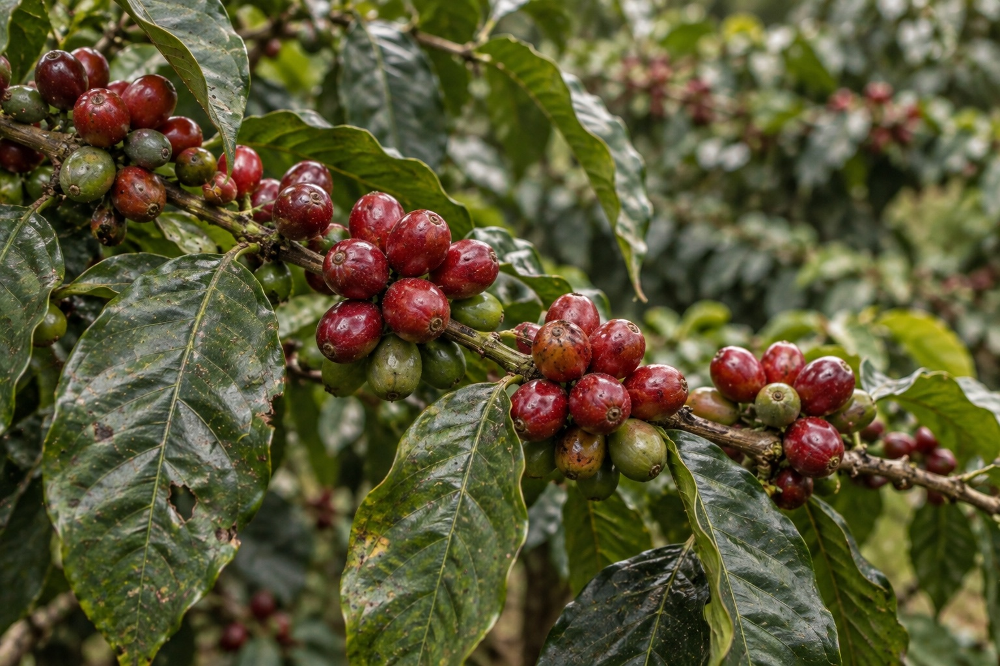
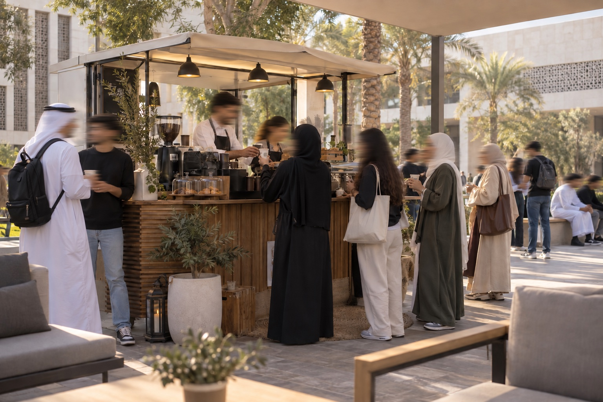

Warm, never formal
Thoughtful coffee and food without making anyone feel they need to know the right words.
Your everyday coffee.
Comforting coffee, bright food, and the kind of room that makes ten minutes turn into an hour.
Pickup from Shuwaikh, Salmiya or Al Shaheed.
A little more for less
Sukun favourites
The house signatures
Our signatures borrow from the flavours we grew up with: dates, cardamom, pistachio and orange blossom. Balanced, never too sweet.
Meet the signaturesFrom the kitchen
Flaky pastries in the morning, generous sandwiches by lunch, and one more cookie for the road. Made in small batches throughout the day.
Browse food01
We opened Sukun for the space between things: before work, after a long day, or during a conversation you don’t want to rush.
Good coffee helps. A comfortable chair helps too.
Stay a while
Soft light, low music, charging points and enough room to settle in. Every branch is designed for the unhurried.
Find a SukunThree corners of Kuwait
Find your corner
Not sure which is nearest?
Open in MapsAbout Sukun
Sukun began with a simple thought: a café can be quick when you need it and still feel like somewhere worth staying.

Where our coffee begins
Our house coffee begins with seasonal lots from Sidama, Ethiopia, selected through traceable regional import partners for their soft fruit, cocoa and citrus character.
We roast in small batches, taste every delivery and keep the menu focused. The goal is not to make coffee complicated. It is to make every cup feel considered.
Sidama, Ethiopia · Seasonal harvestsOur vision
Thoughtful coffee and food without making anyone feel they need to know the right words.
Neighbourhood cafés, familiar faces and pop-ups that let us meet people where they already are.
Clear choices, comfortable rooms and a team that remembers how you like your coffee.
Contact us
Questions about an order, an event or bringing Sukun to your space? We’re here to help.
Events
We’ll be serving coffee along the route for walkers, friends and early-morning supporters. Check back here for the final stall point.

Our first campus stall brought iced favourites, warm pastries and a steady stream of conversations between classes.
Product design rationale
Sukun is a fictional end-to-end café concept for Kuwait, built around one question: how can warmth and speed live in the same digital experience?
01 · Overview
Sukun means stillness. The identity translates that idea into warm materials, editorial typography and concise language, while the ordering experience stays direct and familiar.
A premium neighbourhood café that feels considered, not exclusive — for quick weekday pickups and slow weekend stays.
If customers can understand the menu, personalize a drink and choose pickup details without context switching, more will complete an order with confidence.
02 · Users & goals
Needs a fast repeatable order, accurate ready time and a nearby branch.
Wants clear categories, useful descriptions and confidence trying something new.
Needs atmosphere cues, seating context, hours and directions before committing.
Discover quickly · customize simply · know where and when to collect
Increase pickup adoption · encourage discovery · build branch visits and repeat orders
03 · Journey & structure
04 · Important decisions
A clear category selector keeps every part of the menu one tap away without hiding choices beyond the edge of the screen.
Only relevant choices appear for each item. Defaults are preselected, so a familiar drink is two taps from the cart.
Branch, ready time and total remain prominent through checkout, confirmation and live-style order tracking.
Sign-in keeps contact details and recent orders together, so customers always know what was placed and what happens next.
This portfolio concept demonstrates account sign-in and order tracking locally in the browser. A production café would connect the same screens to secure identity, payment and order-management services.
05 · Design system
Unhurried by design.
Clear at every size, from menu labels to checkout details.
Spacing follows an 8-point rhythm. Controls use a minimum 48px touch target, restrained radii, strong focus states and AA-conscious contrast. Components reuse the same product card, filter chip, input, button and summary-row patterns across breakpoints.
06 · Success metrics
These are measurement hypotheses, not invented results. A first test would combine moderated mobile usability sessions with funnel analytics after launch.